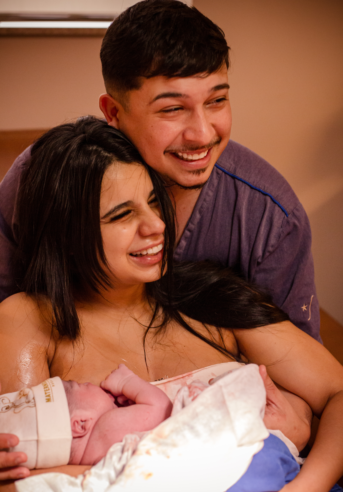
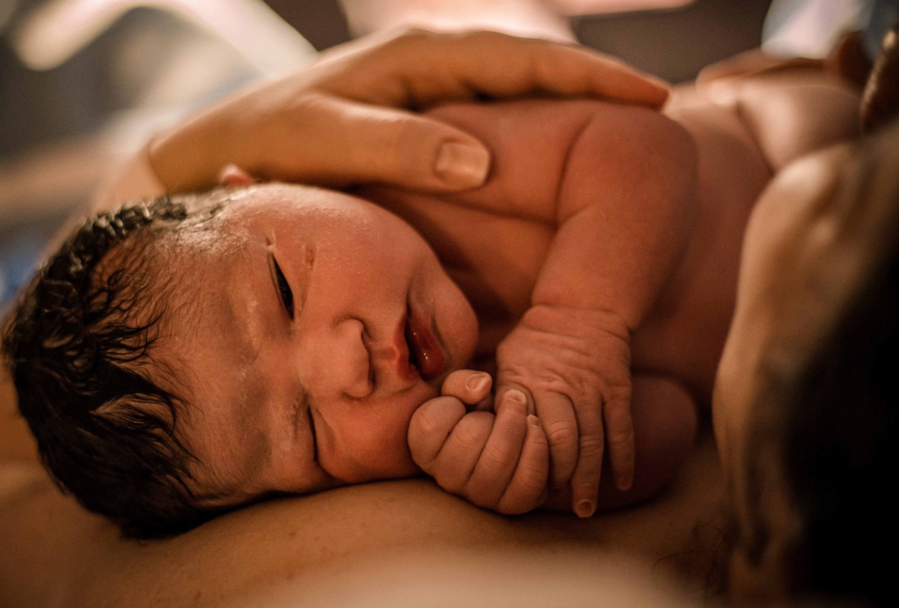
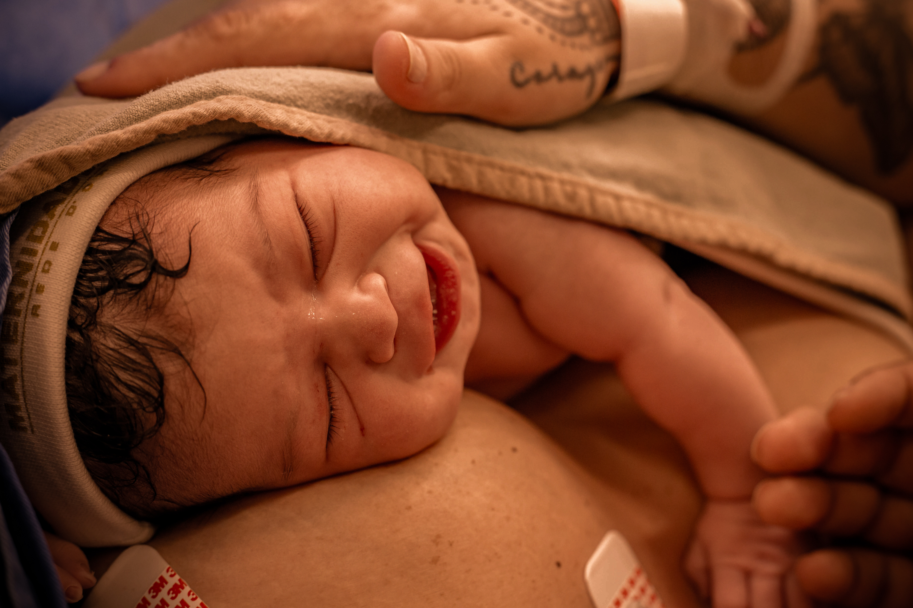
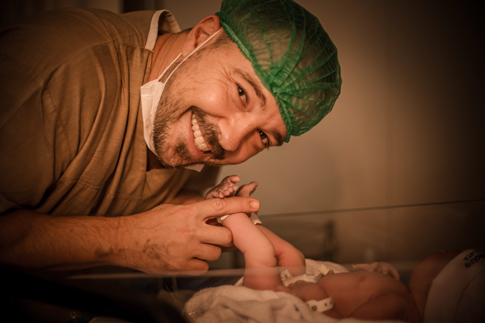

O primeiro olhar, o alívio do choro, o toque pele com pele e a lágrima que escorre sem aviso. Registros sensíveis, silenciosos e eternos para que você reviva cada segundo do nascimento do seu bebê exatamente como sentiu no coração.
Alerta total a partir de 37 semanas até o parto.
Autorizada nas principais maternidades de SP.
Sem poses forçadas e sem flash nos olhos do bebê.

São Paulo • Parto Humanizado
Cada nascimento tem sua própria pulsação. Aqui, não existe "olhe para a câmera" ou sorrisos ensaiados. Existe a força ancestral da mulher, o apoio incondicional do parceiro e a mágica silenciosa do primeiro suspiro no mundo.



No momento mais intenso e sagrado da chegada do seu filho, o que você mais vai precisar é da mão dele segurando a sua, da respiração compassada e da presença dele de corpo e alma ao seu lado.
"Quando você olhar para essas fotos no futuro, não verá apenas imagens técnicas. Você sentirá o calor da pele, o cheiro do seu bebê e o alívio de ter vivido tudo aquilo com amor e respeito."
— Francielly FragnanEspecialista em Registrar Sentimentos Reais
Sou mãe, fotógrafa documental e apaixonada pela intensidade do milagre do nascimento. Acompanho famílias nas maiores maternidades de São Paulo com uma convicção firme: a forma como um bebê chega ao mundo reverbera por toda a sua existência.
Silenciosa em sala cirúrgica ou parto normal, sem atrapalhar a equipe.
Compreensão real das dores, dos medos e da comoção de cada segundo.
Credenciamento e cumprimento rigoroso das normas das maternidades.
Um protocolo pensado para que você sinta paz, tranquilidade e a certeza de que cada detalhe está sendo cuidado.
Conversamos sobre o hospital escolhido, suas expectativas, desejos de privacidade e orientações da sua equipe médica.
Fico em prontidão ininterrupta. Seja às 14h de uma terça ou às 3h da madrugada de um feriado, estou pronta para ir à maternidade.
Acompanho o trabalho de parto, o nascimento sublime, as primeiras avaliações do pediatra e o contato pele com pele sem pressa.
Você recebe uma prévia emocionante tratada com carinho para anunciar a chegada aos familiares e celebrar nas redes sociais.
O registro definitivo e completo do nascimento do seu bebê.
A poesia e a conexão da gravidez de forma leve e sem clichês.
A jornada completa: da doce espera aos primeiros dias com o bebê.
"A Fran foi um anjo no meu parto no São Luiz Star. Nem percebemos que ela estava fotografando, de tão discreta. Quando as fotos chegaram, chorei tudo de novo. Ela pegou o olhar do meu marido que eu nem tinha conseguido ver na hora!"
"Eu achava que foto de celular bastava, mas meu marido me convenceu a chamar a Fran. Foi a melhor decisão de todo o nosso enxoval. Ver as fotos do primeiro minuto da nossa filha não tem preço no mundo."
"Excelente profissional, credenciada e super querida pela equipe médica no Santa Joana. Fiquei muito tranquila sabendo que ela estava lá registrando tudo com delicadeza e respeito absoluto."